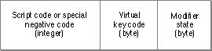

Keyboard-Swap Resource (Type 'KSWP')
The keyboard-swap resource (resource type'KSWP') specifies the modifier-plus-key combinations with which the user can change keyboard scripts, keyboard layouts within scripts, and input methods. For example, the standard keyboard-swap resource specifies that pressing Command-Space bar changes the keyboard to the default keyboard for the next script. (In this case, next means next in the Keyboard menu.)There is one keyboard-swap resource per localized version of system software. A localized system may either use the standard
'KSWP'resource or replace it with one of its own. The keyboard-swap resource is in the System file; its resource ID is 0.The keyboard-swap resource consists of an array with series of entries, each of which specifies modifier-plus-key combinations that can be used to change keyboard layouts and scripts. Figure C-9 shows the format of entries in the
'KSWP'resource.Figure C-9 Format of entries in the keyboard-swap resource

The elements of the entry have these meanings:Listing C-3 is a Rez-format definition of a hypothetical keyboard-swap resource.
- Script code or negative code. The code number of a script system--such as 0 (
smRoman)--or a special negative code for switching. The special negative codes are identical to the selectors for the Script ManagerKeyScriptprocedure. The selectors are listed and described along with theKeyScriptprocedure in the chapter "Script Manager" in this book.- Virtual key code. The virtual key code (for example, $31 for Space bar) required to generate the script code or special negative code of this element.
- Modifier state. The modifier-key setting (for example, Command key down) that must accompany the virtual key code.
Listing C-3 A hypothetical keyboard-swap resource
resource 'KSWP' (0, sysheap) { {/* array: 2 elements */ /* [1] = smKeyNextScript */ -1, $31, controlOff, optionOff, shiftOff, commandOn, /* [2] = smKeyNextKybd */ -4, $31, controlOff, optionOn, shiftOff, commandOn, } };This resource defines a rotation to the next script system on Command-Space bar, and a rotation to the next keyboard layout on Command-Option-Space bar.
- Note
- The expression that evaluates the size of a keyboard-swap resource is complicated. If you need to perform a DeRez operation on a keyboard-swap resource, contact Macintosh Developer Technical Support for details.
- IMPORTANT
- The Script Manager removes from the event queue any Command-key combinations involving the Space bar if that Command-key combination indicates a feature supported by the current script system. For example, if multiple script systems are installed, the Script Manager strips the Command-Space bar combination (which specifies changing script systems) from the event queue. If multiple script systems are not installed, this event is not removed, so users can use it in Command-key macros. Applications, however, should never depend on Command-key combinations involving the Space bar.